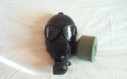
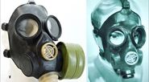

Перша маска в серії ПМК - М-80 (російська: Противогаз Mалогабаритный Kомбинированный), що також називається ЦП-7ВМ для цивільного використання.  Був розроблений в 1970 році (це також рік, в якому був виготовлений перший його прототип) і вступив у серійне виробництво в 80-і роки. Був прийнятий Радянським Союзом в останні роки, пізніше отримав деяке використання з Збройними силами Російської Федерації.
ПМК-1 представляв собою перерву у дизайні стилю "шолом", який так довго був сприйнятий у Радянському Союзі,  використовуючи ті ж ГОСТ 40мм (різьба) для кріплення ФПК, як і більшість інших радянських масок. Після декількох років служби ПMK-1 в кінцевому рахунку буде замінено протигазом ПМК-2 на початку 90-х років. Оскільки маска протигаза ПМК-1 є відносно подібною до маски протигаза ПМК-3, вона як і раніше використовується в Росії як тренувальна маска. Слід зазначити, що існує модель протигаза ПМК-1 для ліворуких. Вона не так поширена, як звичайна. Ця маска може бути ідентифікована наявністю фільтрового порту на правій щоці, а не на лівій щоці
ПМК-1 відомий у двох варіантах, спочатку був виготовлений з усіма металевими частинами, забарвленими чорними кольорами (рання версія): очковий вузол, переговорний апарат, а також кріпленнями клапанів вдоху та видоху. Друга версія, яку іноді називають ЦП-7ВМ, представлені неокрашені металеві деталі (пізня версія).Маска протигаза ПМК-1 була представлена у трьох розмірах: 1, 2, 3.
Особливостями цого протигаза були наступними:це була перша радянська маска з трикутними лінзами та перша маска з питною системою. Також у цієї маски був подвійний клапан видоху, але це не можна назвати її особливістю, бо це загальна особливість радянських протигазів післявоєнного виробництва.
У цієї маски є один суттєвий недолік. Це схильність до запотівання очкового вузла, тому у комплекті наявні спеціальні незапотіваючі плівки. Цей недолік спричиняє відсутність підмасочника, якого також не буде в протигазі ПМК-2, бо їх розробляли майже паралельно. Цю проблему виправлять у протигазі ПМК-3, де з'явиться довгоочікуваний підмасочник
Точно невідомо з якого матеріалу виготовлена маска протигазу ПМК-1, але деякі схиляються до тієї думки, що вона виготовлена з бутилу, що і пояснює її стійкість до кислотних газів.